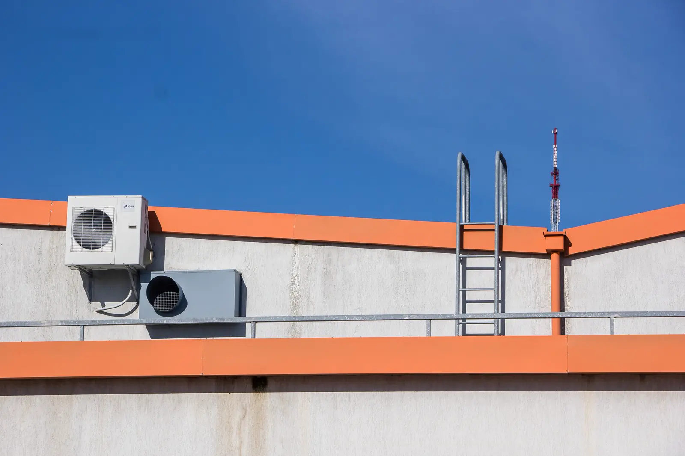
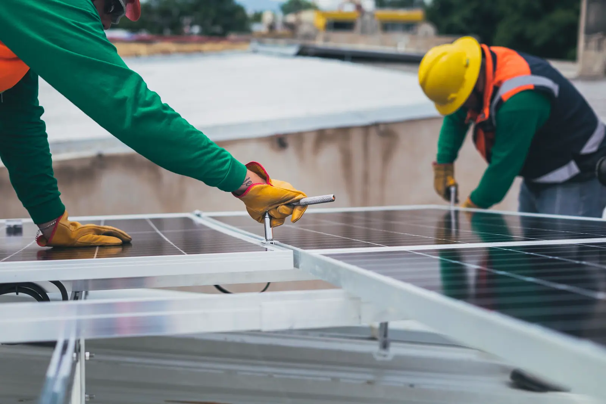

Supply & install
You hold the design and specification; we supply, install, test and commission against it. Best for equipment replacement and defined packages.
Capabilities
Five delivery lines, each tied to a CRB registration. Where a project crosses disciplines, the interfaces stay inside one contract instead of between three.
Turnkey backup power for industrial plants and corporate campuses. We size the set against the real load, build the civil base, route fuel and exhaust, wire the control panel, then prove the system under load before handover.

Road structural maintenance, earthworks and drainage for local authorities, estates and industrial access roads. The aim is simple: move water away from the sub-grade before it moves the road.

VRF and centralised air-conditioning for banking halls, corporate headquarters and government facilities — designed around the building's heat load and the way it is actually occupied.

Structural delivery from foundation layout to plaster finish for mid-sized corporate facilities and apartment developments. One team carries the frame, envelope and internal surfaces through to handover.

Power systems that keep base transceiver stations alive when the grid drops. We deploy hybrid power, solar backup and lithium storage at tower sites, then maintain them against network uptime targets.

Engagement
The right form depends on how much of the design risk sits with your team.
You hold the design and specification; we supply, install, test and commission against it. Best for equipment replacement and defined packages.
We coordinate the drawings and deliver the works as one package, including the civil, mechanical and electrical interfaces.
Planned servicing and breakdown response for generators, cooling plant and BTS power systems already in service.
Before you tender
If your question is not here, call the office — we will answer it directly.
Yes. A generator installation often needs a civil base and an electrical connection; a building needs drainage. Those interfaces are exactly where a single contractor removes handover risk. We confirm which CRB registration covers each part of the scope in the proposal.
For generators, HVAC and BTS power we can supply and install as one scope, or install client-supplied equipment. Both are priced differently because warranty and commissioning responsibility sit in different places.
Yes. Upcountry and remote-site works are planned with plant movement, local labour and material lead times built into the programme. Telecom BTS work in particular is often rural, so logistics are part of the method statement.
We offer planned servicing and breakdown response for the systems we install. The scope, response expectation and spare-parts basis are agreed in writing, so both sides know what “maintained” means.
Drawings, a bill of quantities or a site photo is enough to start. We will confirm the discipline, the class and the next step.